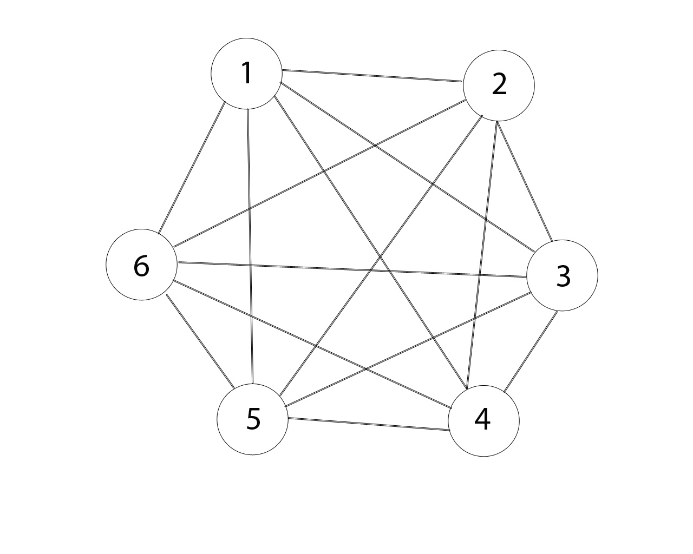
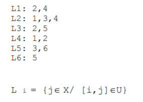

1. Caracteristici și proprietăți
- nod izolat = nod cu gradul 0
- nod terminal = nod cu gradul 1
2m = d(x1)+d(x2)+...+d(xn)
(Suma gradelor vârfurilor este dublul numărului de muchii)
Consecință: In orice G exista un numar PAR de varfuri de graf IMPAR.
lanț = succesiune de noduri cu proprietatea că oricare două noduri consecutive din lanţ sunt adiacente;
- lanţ compus = lanţ în care muchiile se pot repeta
- lanţ simplu = lanţ în care fiecare muchie apare o singură dată dar nodurile se pot repeta
- lanţ elementar = lanţ în care nodurile sunt distincte
- ciclu compus = ciclu în care muchiile se pot repeta
- ciclu simplu = ciclu în care fiecare muchie apare o singură dată dar nodurile se pot repeta
- ciclu elementar = ciclu în care nodurile sunt distincte, cu excepţia primului şi ultimului nod
2. Tipuri particulare de grafuri
- graf regulat = graf în care toate nodurile au grade egale;
- graf complet = graf în care orice două noduri distincte sunt adiacente; 
- Numărul de muchii într-un graf complet = n(n–1)/2
- Numărul grafurilor neorientate cu n vârfuri este 2 n(n-1)/2
- graf aciclic = graf în care nu există nici un ciclu
- graf conex = oricare ar fi două noduri distincte, există lanţ între ele
- componentă conexă = un subgraf conex şi maximal în raport cu această proprietate (nu există lanţ între un nod din subgraf şi un nod care nu aparţine subgrafului) Observație: un nod izolat constituie o componentă conexă.
- ciclu hamiltonian = ciclu elementar care trece prin toate vârfurile grafului
- graf hamiltonian = graf care conţine cel puţin un ciclu hamiltonian Condiţie suficientă de existenţă a unui ciclu hamiltonian: Un graf neorientat cu n vârfuri, în care gradul oricărui vârf este mai mare sau egal cu n/2 este hamiltonian.
- ciclu eulerian = ciclu care trece prin toate muchiile grafului
- graf eulerian = graf care conţine un ciclu eulerian
3. Metode de reprezentare a grafurilor neorientate în memorie
-
Matricea de adiacență
-
Listele de adiacenţă


Pentru orice graf neorientat, matricea de adiacenţă este simetrică faţă de diagonala principală.
Numărul de elemente 1 din matricea de adiacenţă este dublul numărului de muchii din graf.
Suma elementelor de pe linia/coloana x a matricei de adiacenţă este egală cu gradul nodului x.